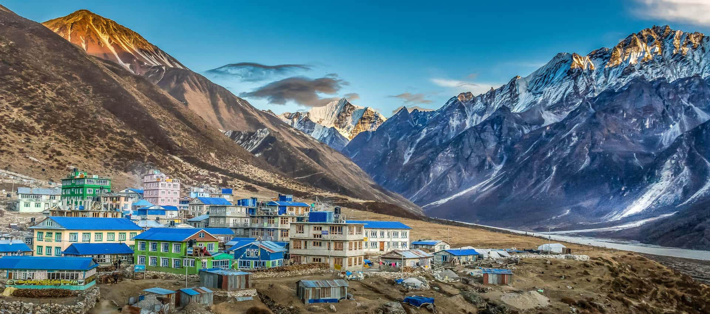

Popular Trekking Places
Everest Base Camp
The world’s most iconic trek. Experience Sherpa villages, breathtaking peaks, and stand at the foot of Mt. Everest.
Annapurna Circuit
A classic trek offering diverse scenery — lush valleys, mountain passes, and views of Annapurna and Dhaulagiri.

Langtang Valley
Close to Kathmandu yet rich in culture and mountain beauty. Known as the “Valley of Glaciers.”

Manaslu Circuit
A remote and stunning trek around the world’s 8th highest mountain, blending adventure and cultural immersion.
Gokyo Lakes
Pristine turquoise lakes at high altitude with majestic views of Everest and surrounding giants.

Upper Mustang
A unique desert-like landscape with Tibetan culture, ancient caves, and the walled city of Lo Manthang.